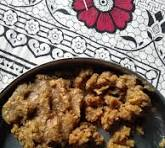

Haryana Churma

Churma is a traditional sweet dish from Haryana, often served with dal and baati. It is made by crumbling coarsely ground wheat flour dough, roasting it in ghee, and mixing it with sugar or jaggery. The aroma of desi ghee makes it a delightful treat.
In Haryana, churma is often prepared for festivals, weddings, and special family gatherings. The rustic flavor and grainy texture, combined with cardamom and dry fruits, make it a beloved dessert that is both nourishing and delicious.
Ingredients
- 2 cups whole wheat flour
- 4 tbsp desi ghee
- 1/2 cup sugar or grated jaggery
- 1/4 tsp cardamom powder
- 2 tbsp chopped dry fruits (almonds, cashews)
- Water (for kneading dough)
- Knead whole wheat flour with 2 tbsp ghee and water into a stiff dough.
- Divide into balls, flatten slightly, and roast on a tawa or bake until fully cooked.
- Break the roasted baatis into small pieces and grind into a coarse powder.
- Heat remaining ghee, add churma, sugar/jaggery, and cardamom powder. Mix well.
- Garnish with dry fruits and serve warm.
Back to file